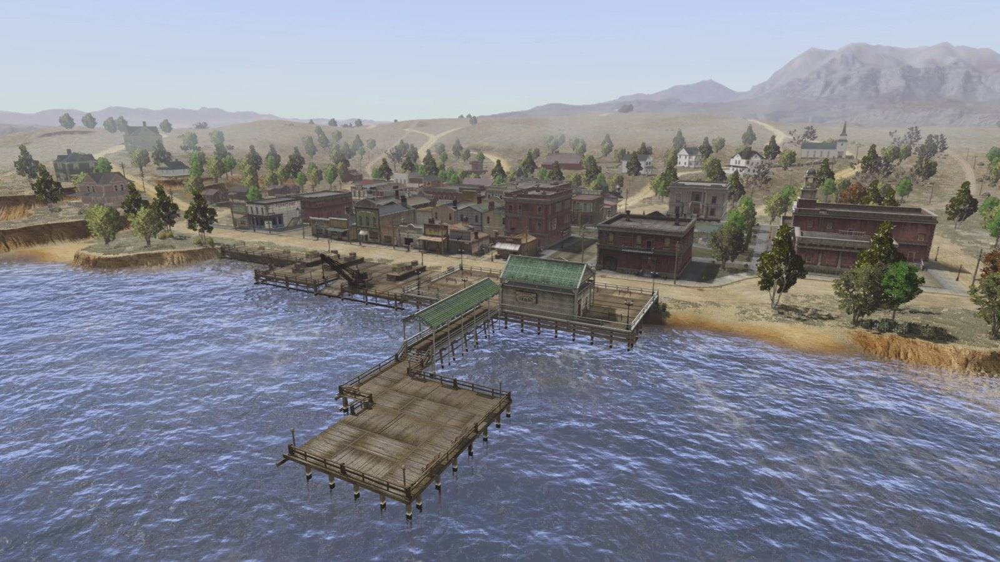
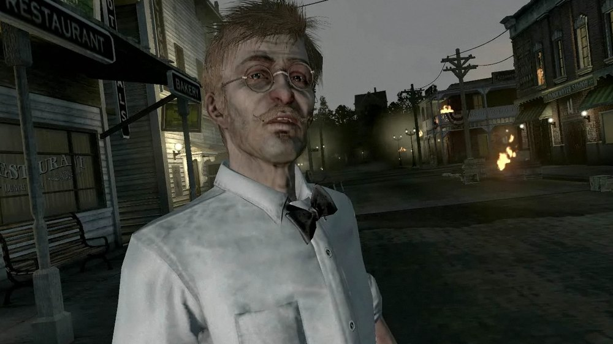
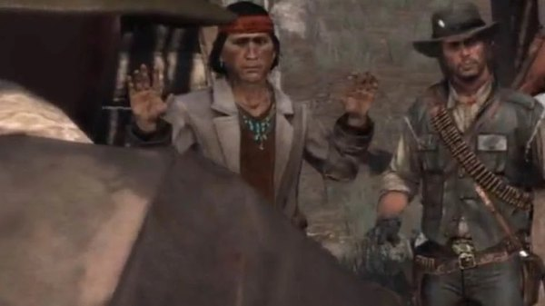
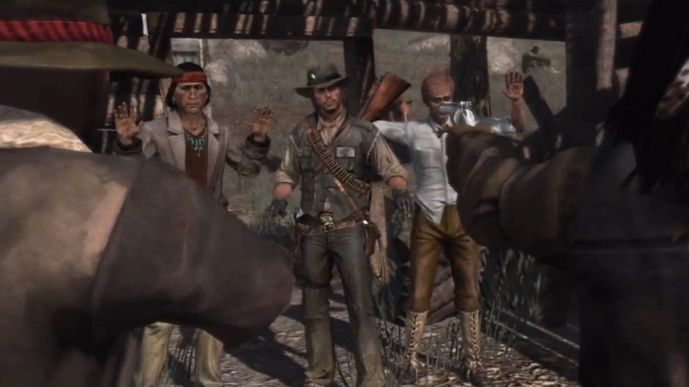

Character · West Elizabeth
Harold MacDougal
Harold MacDougal is a professor of anthropology from Yale, living in Blackwater in Red Dead Redemption. Edgar Ross sends John Marston to him because his research has brought him closer to Dutch van der Linde's new gang than the Bureau has managed.
He employs Nastas as a guide, and his study of the region's Native population is what makes the hunt through Tall Trees possible.
- Role
- Professor of anthropology
- Institution
- Yale University
- Based at
- Blackwater, West Elizabeth
- Works with
- Nastas
- Games
- Red Dead Redemption
Biography
The Blackwater research
MacDougal has come west to study the Native peoples of West Elizabeth. His theories are the racial pseudo-science of the period, and he states them plainly and often. He funds and directs the work himself, with Nastas doing the fieldwork that MacDougal will not do.
Addictions
MacDougal is a heavy user of cocaine and alcohol, and his condition worsens over the course of the story. His judgement is unreliable throughout, and several of the missions he sends John on go wrong because of it.
The hunt for Dutch
MacDougal, Nastas and John work together to find Dutch's hideout at Cochinay. The three are captured at one point and held at gunpoint before they get clear. Nastas is killed during the search, and the operation continues without him.
Relationships

Nastas
His guide and informant, and the man who does the fieldwork for him.

John Marston
Sent to him by the Bureau, and works his missions in Tall Trees.

Edgar Ross
The Bureau agent who puts John and the professor together.
Leaving the West
Once his part in the hunt is done, MacDougal packs up his research and leaves Blackwater for Yale. John sees him off at the train.
Behind the scenes
Harold MacDougal appears in Red Dead Redemption (2010), in the West Elizabeth chapter of the story.
Gallery
